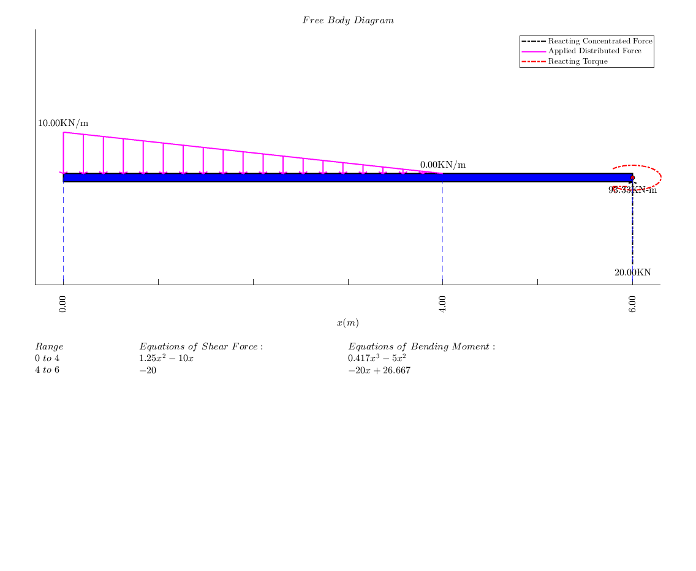

Contents
Shear Force & Bending Moment Examples
How to call the function
To use this program, you call the function placing the arguments in cells
with keywords at the beginning of each cell except for the first 2 arguments.
First Argument
The first argument is the name of the problem as a string e.g.: 'PROB 1'.
Second Argument
-Simply supported beam
The second argument is a row vector containing length of the beam and
location of the supports, for example, if the length of the beam is 20m and
has 2 supports, one at 3m and the other at 17m, the second argument will
thus be: [20, 3, 17]
-Cantilever
If the problem is a cantilever problem, then you have only one clamped
support, at the beginning or end of the beam. In such a case, the number is
second argument contains 2 elements instead of three. For instance, fir a
cantilever of length 20m, supported at the beginning, the second argument
would be [20,0], and if supported at the end, we have [20,20].
-Beam on the floor
Its possible to have a problem in which the body is lying on the floor
without any point support. In such scenario, the second argument will just
be the length of the beam
Third argument and on
From the third argument and onward, we use cells. The first element of the
cell contains a keyword describing what type of load is inside the argument.
The second element is the magnitude of the load while, the third element of
a cell argument is its location. Keywords: Point Load = 'CF'
Moment = 'M'
Distributed Load = 'DF' To add a downward point load of magnitude 5N at location 4m, the argument
would be {'CF',-5,4}. Note the negative sign. If the force is acting upward
the argument would be {'CF',5,4};Examples
Moment(Torque)
To add a clockwise moment of magnitude 10N-m at location 14m, the argument
would be {'M',-10,14}. Note the negative sign. If the moment is anticlockwise
the argument would be {'M',10,14};Concentrated Load(Torque)
To add a downward force of magnitude 10N at location 14m, the argument
would be {'CF',-10,14}. Note the negative sign. If the moment is
upward the argument would be {'CF',10,14};Distributed Force
To add distributed load we need to describe all of them with the minimum
number of point required to describe the profile with the highest
complexity. For example, {'DF',[5,5],[2,10]}, or {'DF',[1,4,5],[2,8,10]}
There is no limit to the number degree of polynomial that can be used.Note
its is important that all concentrated loads and torques are listed in the
order of locations
Name1 = 'Prob 1';
LengthSupport1 = [20,5,20];
F1 = {'CF',-2,0};
T1 = {'M',10,8}; T2 = {'M',-10,12};
D1 = {'DF',5,[1,3]}; D2 = {'DF',-4,[14,17]};
SFBM(Name1,LengthSupport1,F1,T1,D1,T2,D2);
Name2 = 'Prob 2';
LengthSupport2 = [9,2,7];
F2 = {'CF',-400,3};
D3 = {'DF',-400,[0,2]}; D4 = {'DF',-200,[3,9]};
SFBM(Name2,LengthSupport2,F2,D4,D3);
More Examples from Mechanics of Materials (7th Edition) Ferdinand Beer and Russel Johnston
Eaxmple 1
Name1 = 'Sample Problem 5_2';
LengthSupport1 = [16,16];
F1_1 = {'CF',-10,11};
T1_1 = {'M',-20,11};
D1_1 = {'DF',-3,[0,8]};
SFBM(Name1,LengthSupport1,F1_1,T1_1,D1_1);
Eaxmple 2
Name2 = 'Sample Problem 5_3';
LengthSupport2 = [32, 0, 24];
F2_1 = {'CF',-20,6}; F2_2 = {'CF',-12,14};
D2_1 = {'DF',-1.5,[24,32]};
SFBM(Name2,LengthSupport2,F2_1,F2_2,D2_1);
Eaxmple 3
Name3 = 'Sample Problem 5_4';
LengthSupport3 = [9, 0, 9];
D3_1 = {'DF',-20,[0,6]};
SFBM(Name3,LengthSupport3,D3_1);
Eaxmple 4
Name4 = 'Sample Problem 5_5';
w0 = 10; a = 4; L = 6;
LengthSupport4 = [L, L];
D4_1 = {'DF',[-w0,0],[0,a]};
SFBM(Name4,LengthSupport4,D4_1);
